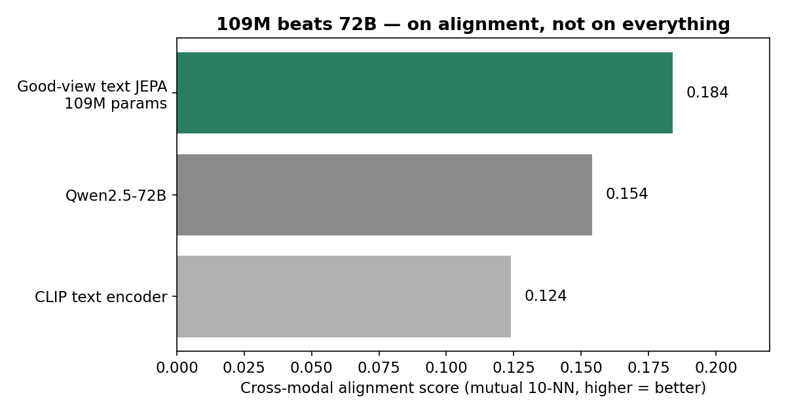
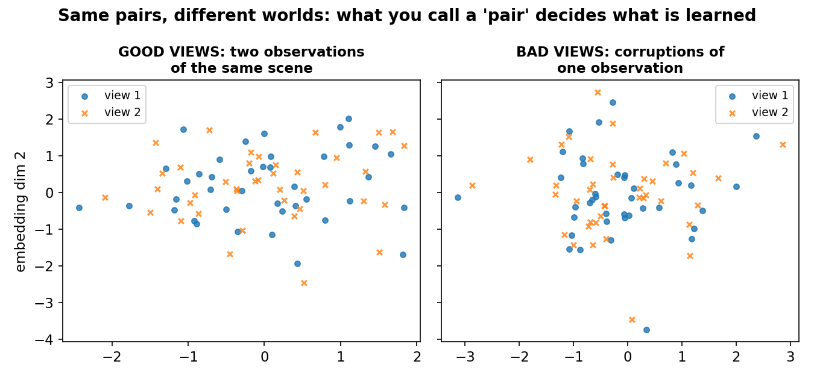
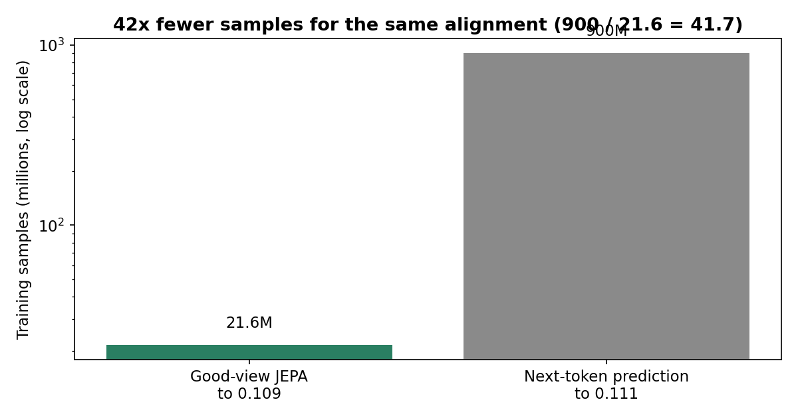
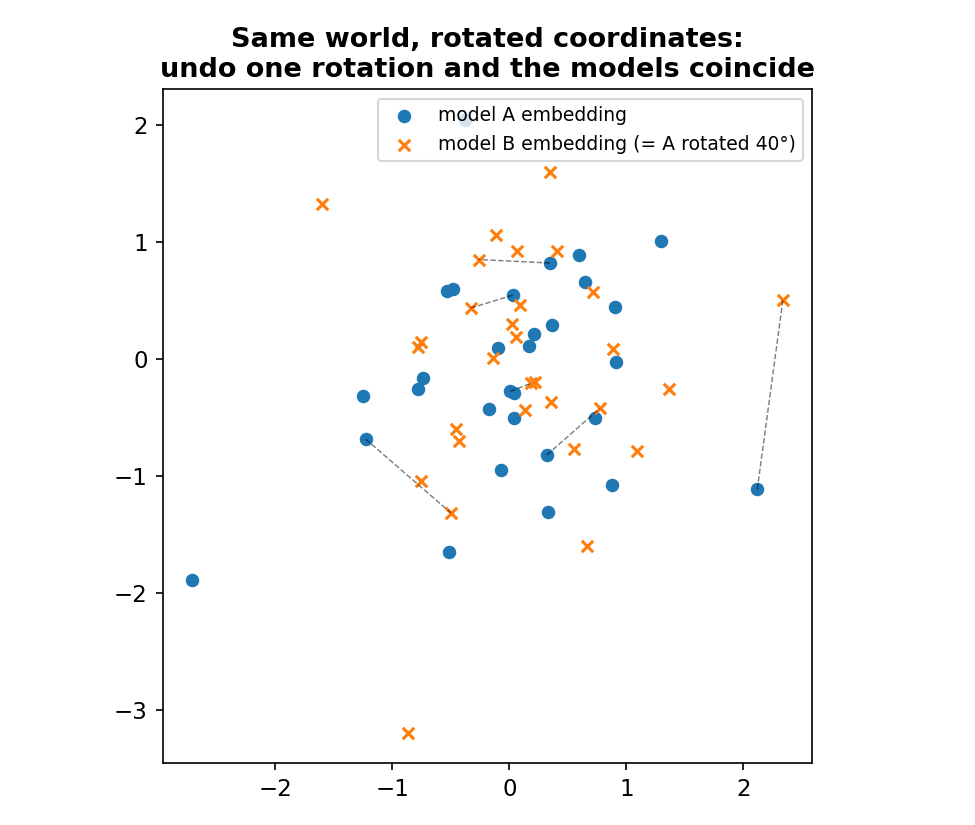

On October 29, 2026, Randall Balestriero (Brown University) and Yann LeCun (New York University / AMI Labs) posted a paper that turns a two-year-old conjecture into a theorem — and then embarrasses the scale-everything playbook with a 109-million-parameter model. Their good-view text JEPA scored 0.184 on a cross-modal alignment benchmark, ahead of every language model they tested up to 72 billion parameters, including Qwen2.5-72B at 0.154 and CLIP's text encoder at 0.124. The small model is 660 times smaller than the 72B model it beat (72,000 / 109 = 660.6). It also reached the same alignment as next-token prediction with 42 times fewer training samples: 21.6 million versus 900 million.
The paper is "Proving and Improving the Platonic Representation Hypothesis with JEPAs" (arXiv 2610.39302). The Platonic Representation Hypothesis, proposed at ICML 2024, observed that image models and language models seem to converge on the same internal picture of the world as they scale — a photo of a cat and a sentence about the same cat point at the same thing. Until now that was an empirical curve with no proof and no recipe. This paper supplies both, and the recipe is the interesting part: it says next-token prediction — the training objective behind nearly every language model — is the wrong way to learn a picture of the world.
This post explains the theorem in plain language, what "good views" are, why the 109M result is real but narrow, and where the argument stops applying.
The ELI5 version
Imagine two friends who have never met, each describing the same room. One walked through it; the other only read a description of it. If both descriptions are faithful, you can line them up: "the thing by the window" in one account is "the chair" in the other. They used different words, different coordinate systems — but they describe one room, so a single rotation of one map onto the other makes them agree.
Now imagine a third friend who only ever memorized one description word for word, and practiced predicting the next word of that description. Ask them about the room and they can recite beautifully — but their map is a map of the description, not of the room. Change the wording and they get lost, because nothing in their training ever forced them to separate the room from the words about it.
That is the paper's distinction in one paragraph. A JEPA (joint-embedding predictive architecture) learns by pulling together embeddings of inputs it declares to be views of the same thing. If those pairs are two genuine observations of one scene — a photo and its caption, two camera angles — the model is forced to learn the scene, because the scene is the only thing the two views share. The authors call these good views. If the pairs are just corruptions of a single observation — the same sentence with words masked, the same image cropped — the model can cheat by memorizing the observation itself. Those are bad views. And next-token prediction, the paper shows formally, is a bad-view JEPA: its "pairs" are two parts of the same document, not two observations of one scene.

How it works: one theorem, one rotation
The Platonic Representation Theorem, as the authors state it, works in an idealized setting: a finite world, where each observation is sufficient to determine the world state it came from, and where training reaches the population optimum with a unique minimizer up to rotation. Under those conditions, JEPAs trained separately on any number of modalities — images, text, video, audio, actions — learn the same representation, up to one orthogonal rotation each.
"Up to a rotation" sounds like a technicality. It is the whole point. A rotation is just a change of coordinates: north-up versus east-up on two maps of the same city. If two models differ only by a rotation, they have learned the same geometry with different labels on the axes. Find the rotation — a standard Procrustes alignment, the same math used to align protein structures — and the two models coincide. The companion notebook checks this on a toy: two embeddings differing by a random rotation recover each other with relative error around 10^-15.
Three steps make the argument bite:
- 1. JEPAs learn the spectral embedding of their positive pairs. With a whitened second-order anti-collapse loss, what a JEPA ends up representing is determined by which inputs it declares to be "the same thing." The pairs are the specification; everything else is implementation detail.
- 2. Good pairs specify the world; bad pairs specify the modality. If positives are two observations of one scene, the only thing they share is the scene, so the learned embedding belongs to the world. If positives are corruptions of one observation, what they share includes all the modality's own quirks — wording, pixel statistics, sensor noise — so the embedding belongs to the modality. The toy in the notebook shows the mechanism: averaging two independent observations washes out modality noise (world share of variance 0.67), while averaging a view with its own corruption keeps the shared noise (0.50).
- 3. Next-token prediction is a bad-view JEPA. This is the paper's most provocative formal step. An autoregressive model's positive pairs are a prefix and its continuation — two parts of one document. Nothing in that pairing ever points at a scene outside the document. So the representation it learns is, by the theorem's logic, a representation of text, not of the world text describes. That reframes the last five years of scaling: we have been scaling a bad-view objective and watching world-like structure emerge despite it, not because of it.

The state of the art: the numbers, and what they do not say
The empirical case runs from 145,000 Flickr captions up to the texts of 940 million web images, each paired with its original alt text plus descriptions generated by a vision-language model. Four results carry the story:
- 42x fewer samples. On identical texts with an identical encoder, a good-view JEPA reached 0.109 alignment after 21.6 million samples; next-token prediction needed 900 million samples to reach 0.111. That is 900 / 21.6 = 41.7x, and the paper also reports 14x fewer text tokens and 435x fewer unique images for the same alignment. Sample efficiency, not parameter count, is where the good-view advantage is largest.
- It scales with data. A 33M-parameter text JEPA scored 0.034 on Flickr captions alone, but 0.125 when trained on the texts of 50 million web images — level with much larger language models. The 109M model on 940 million images' texts reached 0.184. The ladder is smooth: more genuine pairs, better world representation.
- It beats 72B on alignment. The 0.184 score sits above Qwen2.5-72B (0.154) and CLIP's text encoder (0.124) on the original hypothesis paper's benchmark against a frozen vision-encoder reference. The gap to the 72B model is +0.030 absolute, +19.5% relative.
- It wins pair-free, too. On a newer benchmark that needs no paired image-text data, the 109M JEPA reached 64.4% top-5 accuracy on ImageNet-100, above all 21 vision-language pairs the benchmark reported (at most 56%). Rerun under identical conditions, the benchmark's strongest model reached 47.6% — a 16.8-point gap. The authors also note next-token models failed in half of their runs on the same texts.

Read the headline with its scope attached. The 0.184 is an alignment score, not a capability score. Nobody is claiming the 109M JEPA can chat, code, or reason better than a 72B language model — it was not evaluated on those tasks, and a representation that aligns with vision is not a chatbot. What the result does claim is narrower and, in a way, more threatening to the status quo: on the specific job of learning a world representation from text, the standard objective wastes roughly 40x the data, and a small model with the right pairs beats a giant with the wrong ones.
The catch: idealized theorems, paired data, and one metric
Four caveats, stated plainly:
- The theorem is idealized. Finite world, sufficient observations, population optima, a unique minimizer up to rotation (proved under a spectral gap). Real training has none of these cleanly: finite samples, optimization error, non-unique minima. The theorem tells you what the objective wants; it does not guarantee what gradient descent gets. The gap between the two is where most of deep learning lives.
- Good views need paired observations of the same scene — and text often has none. A photo and its caption are a natural pair. Two paragraphs about the same event are harder to certify as "the same scene," and most raw text has no second observation at all. The paper's large-scale corpus was built by pairing image texts with generated descriptions — a construction step that itself costs a vision-language model. If good views are expensive to manufacture, the 42x sample saving has to be netted against the cost of building the pairs.
- The empirical case is one paper's metrics. The alignment benchmark, the pair-free benchmark, and the sample-efficiency comparison all come from the authors' own evaluation choices. Independent replication has not happened yet — the paper is a preprint from October 29, 2026, not peer-reviewed work. Treat 0.184 as a claim with a clear address (arXiv 2610.39302), not as a settled fact.
- Alignment is not intelligence. A model whose text embeddings rotate-align with vision embeddings has learned a shared geometry. It has not thereby learned to plan, to reason, or to act. The paper's contribution is to representation learning; whether good-view representations transfer to downstream reasoning as well as next-token representations do is the open experiment this paper invites, not one it settles.

None of that cancels the result. It locates it: this is a theorem about what training objectives specify, with an experiment showing the specification matters at 40x data efficiency and 660x parameter scale on the metric the theorem governs. If the next generation of world models trains on good views instead of next tokens, the data bill — not just the parameter bill — is what collapses. That is the bet LeCun has been making for years, and this paper is the first version of it with a proof attached.
Takeaways
- The Platonic Representation Hypothesis is now a theorem (for JEPAs): separately trained models learn the same representation up to one rotation, provided their positive pairs are two observations of the same scene — good views.
- 109M beats 72B on alignment: a good-view text JEPA scored 0.184 versus Qwen2.5-72B's 0.154 and CLIP text's 0.124 — a 660x parameter gap, +19.5% relative over the 72B model.
- 42x fewer samples: good views reached 0.109 alignment at 21.6M samples; next-token prediction needed 900M for 0.111. The headline efficiency win is data, not just parameters.
- Next-token prediction is formally a bad-view JEPA: its pairs are parts of one document, so it learns a representation of text, not of the world text describes.
- Scope is everything: alignment is not chat, coding, or reasoning; the theorem assumes idealized conditions; the paper is an October 29, 2026 preprint, not yet peer-reviewed or independently replicated.
- Check it yourself. The companion notebook recomputes the headline ratios (660.6x, 41.7x, 16.8 points), verifies the rotation claim on a toy (error ~10^-15), and shows why good views wash out modality noise while bad views keep it.
Sources: Balestriero & LeCun, "Proving and Improving the Platonic Representation Hypothesis with JEPAs" (arXiv 2610.39302, October 29, 2026); the original Platonic Representation Hypothesis paper (ICML 2024). All benchmark figures are the authors' reported results, not independently replicated; toy diagrams and notebook demos are labelled illustrations. No content about excluded vendors appears in this post.